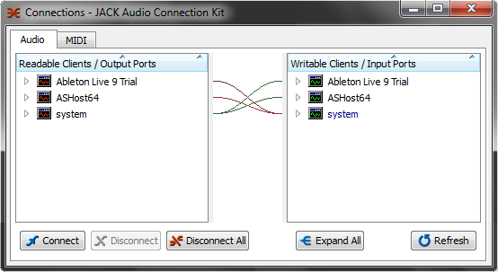
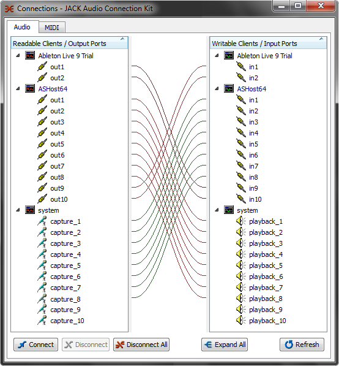

--- 
layout: asx 
title: Jack Audio  
section: jack 
---
{% include _set_lang.html %}


<section >
	<div class="container">
		<div class="row">
			<h2>Jack Audio Server</h2>
			<p>Per superare le limitazioni dei driver audio ad alta risoluzione, che non consentono di utilizzare il sistema audio con due o più software DAW simultaneamente, AudioStation è equipaggiata con Jack Audio Server / Jack Audio Connection Kit.</p>
			<p>Grazie a questa funzionalità è possibile utilizzare il VST Host/Mixer di AudioStation assieme ad altre applicazioni audio, come ad esempio Ableton Live, Pro Tools, Cubase, Nuendo, Sonar, Wavelab o altri, condividendo gli ingressi e le uscite audio di AudioStation tra le varie applicazioni.</p>
			
				<p>I più esperti potranno anche utilizzare Jack Audio Connection Kit (la patchbay audio di Jack) per indirizzare liberamente i segnali audio tra le applicazioni attraverso cavi audio virtuali.</p>
			
		</div>
	</div>
</section>
